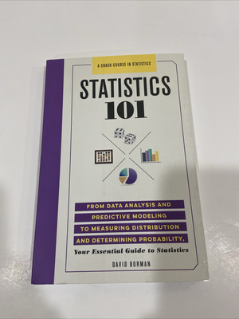
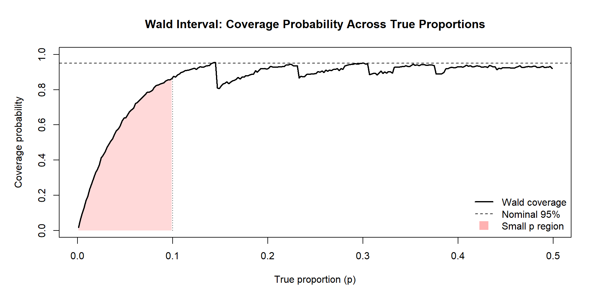
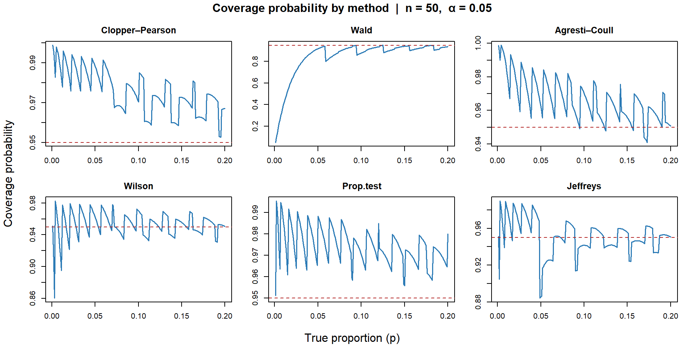
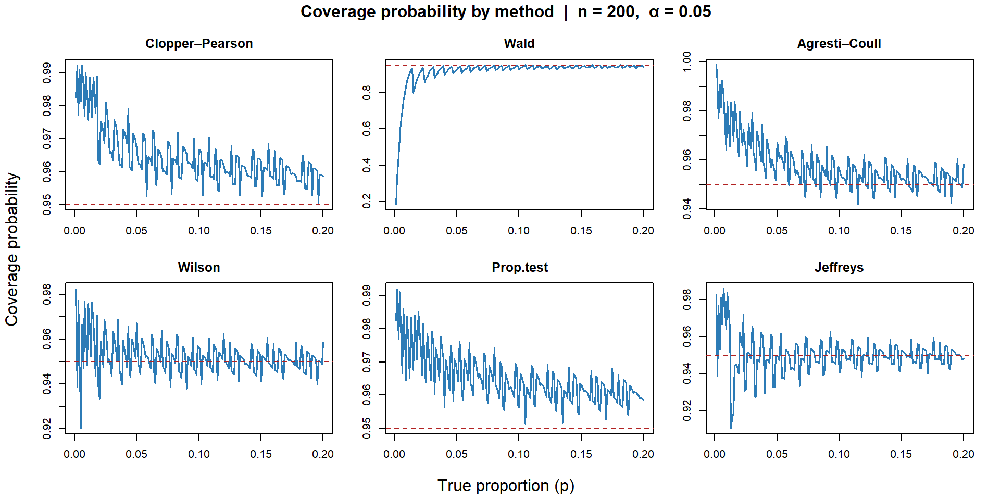
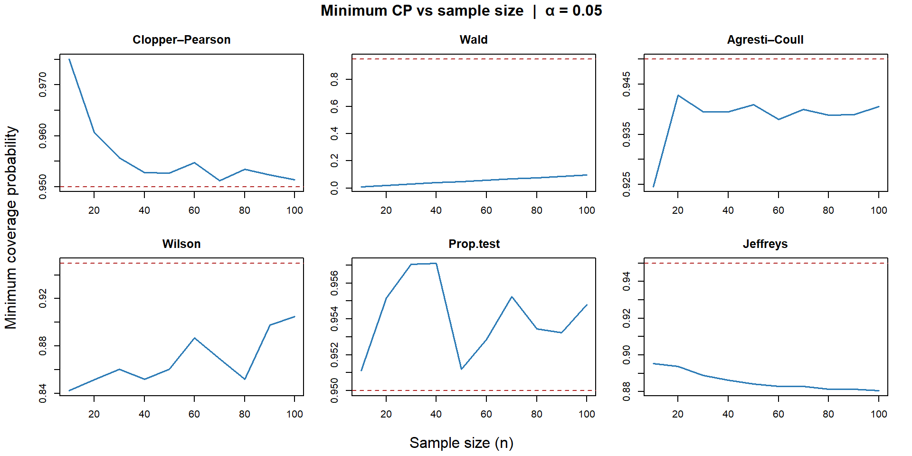
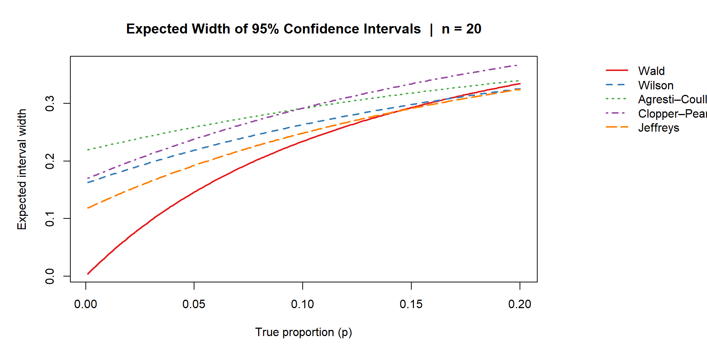
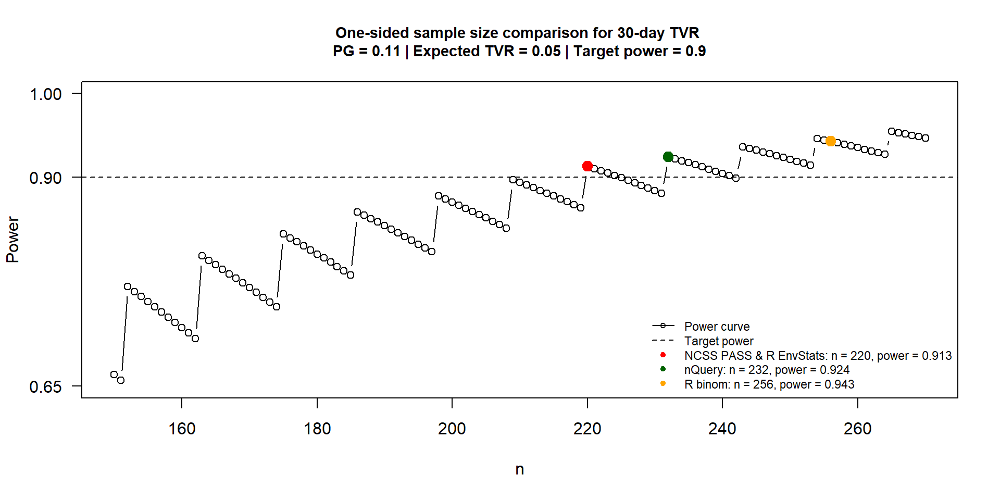

Statistical Design and Analysis of a Non-Inferiority Clinical Trial
Section 1
AINE PRESENTS…
Introduction
NI explained
Biomimics
Meta analysis
Section 2
Overview
Simulation Study: Small Proportions
n calculation comparison
Shiny App
To do
Simulation Study: Small Proportions
Problem
Complications = lower boundary
High Success Rate = upper boundary
Wald’s confidence interval
\[ \hat{p} \;\pm\; z_{1-\alpha/2}\sqrt{\frac{\hat{p}(1-\hat{p})}{n}} \]

- Violated symmetry assumption underlying the normal approximation
- Narrow CI
- Extend beyond the [0,1] range
- Substantial undercoverage

Wald interval coverage across a range of true proportions when n = 20. For small values of p (shaded region), coverage falls well below 95%, indicating poor performance of the normal approximation in this setting.
Alternatives
Wilson Score Interval
Agresti–Coull Interval
Clopper–Pearson Interval
Prop.test Interval
Jeffreys Interval
Wilson Score Interval
\[ \frac{ \hat{p} + \dfrac{z^2}{2n} \;\pm\; z \sqrt{ \dfrac{\hat{p}(1 - \hat{p})}{n} + \dfrac{z^2}{4n^2} } }{ 1 + \dfrac{z^2}{n} } \]
Think of it as an adjusted Wald CI
Wald deems estimate to be center of interval
Wilson fixes that with
\[ \tilde{p} = \frac{ \hat{p} + \dfrac{z^2}{2n} }{ 1 + \dfrac{z^2}{n} } \]
Adjusting center of interval
\[ \dfrac{z^2}{2n} \]
Pulls centre away from 0 or 1
Agresti-Coull Interval
\[ \hat{p} = \frac{x}{n} \qquad \longrightarrow \qquad \tilde{p} = \frac{x + 2}{n + 4} \]
CI then calculated as:
\[ \tilde{p} \;\pm\; 1.96 \sqrt{ \frac{ \tilde{p}(1-\tilde{p}) }{ n+4 } } \]
Essentially improved Wald
Clopper-Pearson Interval
\[ \left[ \mathrm{Beta}^{-1}\!\left(\tfrac{\alpha}{2};\; x,\; n - x + 1\right), \;\; \mathrm{Beta}^{-1}\!\left(1 - \tfrac{\alpha}{2};\; x + 1,\; n - x\right) \right] \]
- AKA exact binomial confidence interval
- based directly on the binomial probability model
- Finds range of true p that would make the observed result x plausible
\[ X \sim \text{Binomial}(n, p) \]
Prop.test Interval
\[ \text{derived from a score test:} \quad \frac{(\hat{p} - p)^2}{\hat{p}(1-\hat{p})/n} \]
Similar to wald but uses a score based interval
Score based interval = CI made by testing which true proportions are reasonable
i.e. values of p that beat the PG
Jeffrey Interval
\[ \left[ \mathrm{Beta}^{-1}\!\left(\tfrac{\alpha}{2};\; x + \tfrac{1}{2},\; n - x + \tfrac{1}{2}\right), \;\; \mathrm{Beta}^{-1}\!\left(1 - \tfrac{\alpha}{2};\; x + \tfrac{1}{2},\; n - x + \tfrac{1}{2}\right) \right] \]
Based on bayesian idea but often works for frequentists problems
Starts with a weak prior belief on p
Similar to Agresti-Coull but adds 0.5 successes and 0.5 failures
Similar workflow to Pires & Amado, 2008 paper: Interval estimators for a binomial proportion: Comparison of twenty methods
Behaviour evaluated under:
- Coverage probability
- min coverage probability vs Sample size
- expected width of 95% CI
How often does CI actually contain p?

Coverage probability for each method as a function of p (n = 50, α = 0.05). The dashed red line marks the nominal 95% level.
What if we increase sample size?

Coverage probability for each method as a function of p (n = 200, α = 0.05). The dashed red line marks the nominal 95% level.
Worst case performance?

Minimum coverage probability across different sample sizes for each method. The dashed red line shows the nominal 95% level.
On average wide are the CIs?

Summary Table
xxxx xxxx xxxx xxxx
Sample size calculation
| Parameter | Value |
|---|---|
| Endpoint | 30-Day TVR |
| \(\alpha\) (one-sided) | 0.025 |
| Power | 90% |
| Performance Goal (PG) | 0.11 |
| Expected Rate (P1) | 0.05 |
NCSS PASS n = 220
nQuery n = 232

R EnvStats n = 220
R binom n = 256
[add 2 or 3 more methods]

[mark the ~89 % power on plot clearly]
Shiny App
[POSIT LINK:]
| Parameter | Value |
|---|---|
| Endpoint | 30-Day TVR |
| \(\alpha\) (one-sided) | 0.025 |
| Power | 90% |
| Performance Goal (PG) | 0.11 |
| Expected Rate (P1) | 0.05 |
Final steps
Bayesian joint modelling
bayes for gate keeping
Internim analysis
Synthetic Data
References
Thank you for your attention!
Questions?